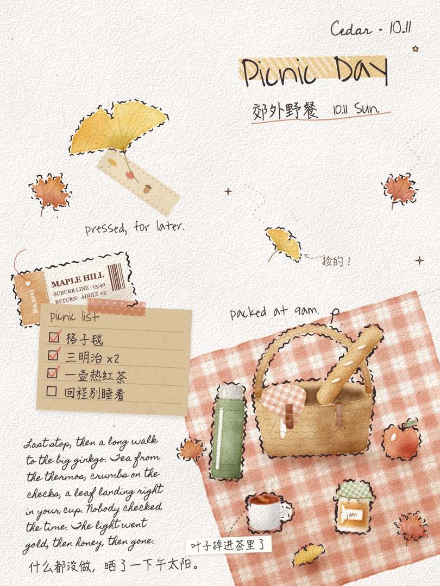
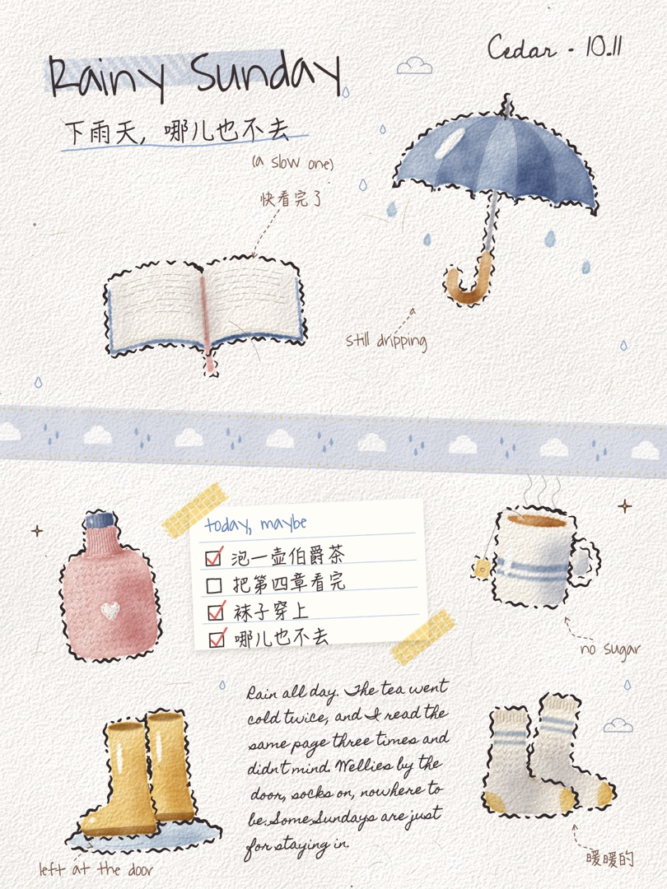
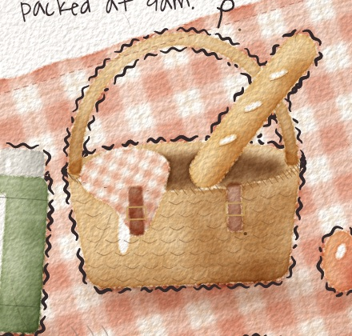
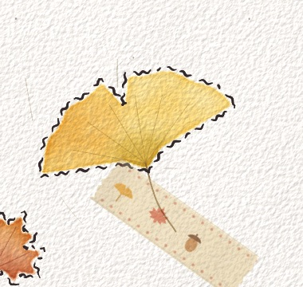
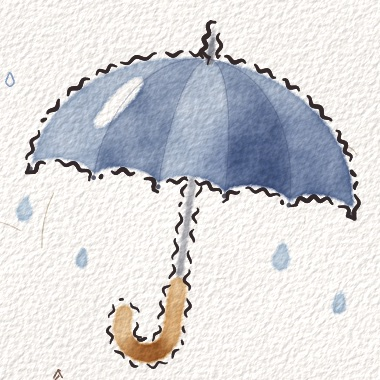
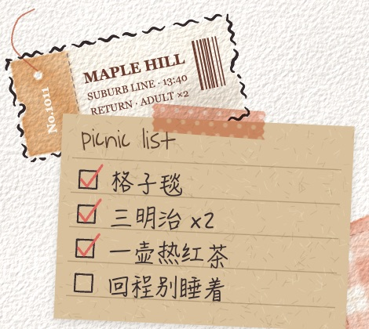
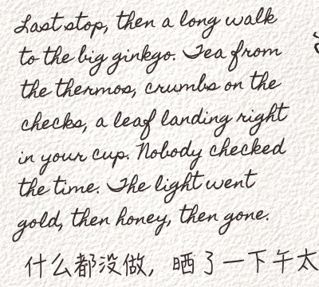
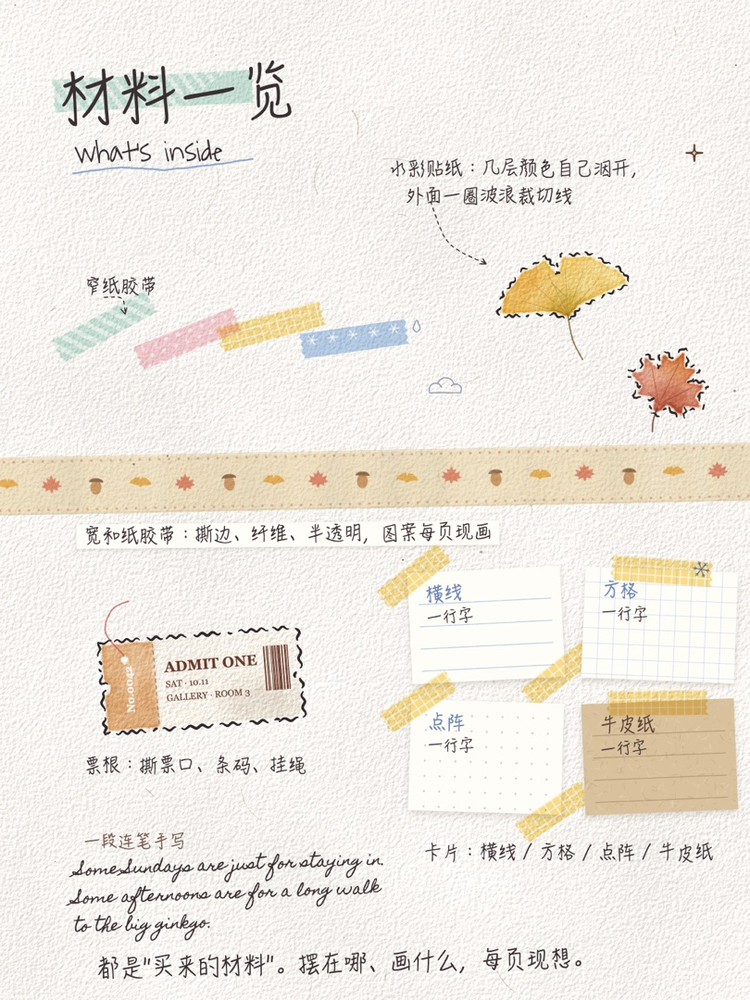

journal-page
整页手帐
让 Claude 用代码，一笔一笔画一整页手帐。




不是 AI 生图
every stroke is code
每一块颜色、每一道线、每一个字，都是 Claude 在 canvas 上一笔一笔画出来的。水彩是算出来的：几层透明颜色叠在一块里，自己洇开、自己融，水干的地方积出一道深边；纸有纸纹，最后统一打一次侧光，颗粒从颜色底下透上来。画完以后，Claude 会自己看图，哪里不像就改，改到满意为止。





材料一览
what's inside
工具只管"买来的材料"长什么样。摆在哪、画什么、胶带上印什么花纹，每一页都是现想的。
- 水彩贴纸 + 波浪裁切线
- 宽和纸胶带
- 窄纸胶带
- 票根
- 横线 / 方格 / 点阵 / 牛皮纸卡片
- 标题压胶带
- 虚线箭头批注
- 连笔英文手写
- 雨滴、云、雪花、星星

每一页都不一样
no templates
菜单，不是清单
能放的东西很多，一页挑三到五样就够。照单配齐，再怎么换版面也像模板。
每页发明一样
至少有一样是这一页自己的：野餐页那块直接画在纸上的格子毯，那片用胶带按住叶柄的银杏。
先定三件事
主角放哪个角、白留在哪、胶带往哪个方向走。东西有大有小、歪着放、互相压着。
怎么用
how to
- 装好 Claude Code、Node.js 和 Chrome
- 把仓库放进 Claude 的 skills 文件夹，装一个依赖
- 跟 Claude 说一句话
git clone https://github.com/lumen-prism/journal-page ~/.claude/skills/journal-page cd ~/.claude/skills/journal-page npm i puppeteer-core
"做一页手帐，主题是周末去海边。"
就这一句。Claude 会自己写、自己看图、改到满意。
中文手写用的是 Mac 自带的 HanziPen SC，别的系统会退回默认字体。示例页签的是 "Cedar"，画自己的页时记得换成你的名字。
许可
代码 · AGPL-3.0可以用、可以改；用了改了（包括做成网站或服务）都要用 AGPL 开源。闭源商用请开 Issue 联系作者。
样张 · CC BY-NC-SA 4.0可以转载、改编，要署名，不可商用，改编后用同样的协议分享。
字体Waiting for the Sunrise、Cedarville Cursive（SIL OFL 1.1），Homemade Apple（Apache 2.0）。